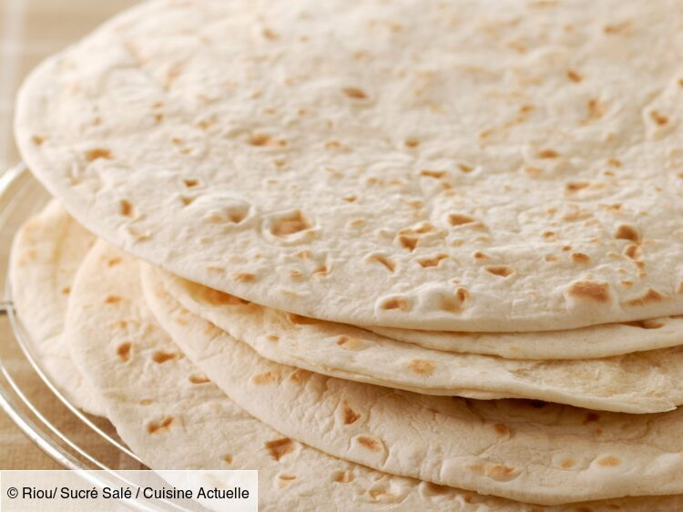

LES FAJITAS
LES INGREDIENTS
Pour cuisiner les fajitas ou les tortillas ( vous les appelez comme vous voulez, c'est la même chose), vous devez preparer le pain a fajitas.

source de l'image
Il vous faut:
- -500g de farine
- -9cl d'huile ( d'olive bien sur)
- -1 cuillère à café de sel
- -1/2 cuillère à café de sucre
- -300ml de lait.
Il faut mélanger puis pétrire dans un récipient tous les ingrédients pour obtenir une pate homogène et non collante.
Ensuite couvrez et laissez reposer la pâte pendant 30min. Divisez la en 16 boulettes puis aplatissez les.
Mettez ensuite les gallettes à cuire dans une poêle 40 secondes de chaque face
Pour plus de précision cliquez ici
Après nous allons préparer les épices pour donner du goût aux fajitas.
Il faudra donc mélanger
- 1 cuillère à thé de paprika
- 2 cuillère à thé de poudre de chili, 1 c. a thé pour plus doux
- 1 cuillère à thé de sel
- 1 cuillère à thé de sucre
- ½ cuillère à thé de poudre d'oignons
- ¼ cuillère à thé de poudre d'ail
- ¼ cuillère à thé de cumin moulu
- ¼ cuillère à thé de cayenne en poudre
- ¾ cuillère à thé de bouillon de poulet en poudre ou d'un cube réduit en poudre...( facultatif )
- 1 cuillère à table de fécule de mais
source:ici
Après avoir préparer tous ce bordel, nous allons cuisiner les poivrons, le poulet et les oignons
- Prendre une poêle et verser de l'huile d'olive sur un feu coux
- Mettre les oignons et les faire cuire
- Coupez la viande en gros carré et les faires cuire dans la poêle
- Coupez les poivrons en fine tranche et les inclure dans la mixture
- Mettre les épices
- Laissez migoter pendant à peut prêt 20min
- Apres tous ça, disposer les sur le pain et déguster
Je viens de vous donner la recette que je fais. ( donc il n'y a pas de source)
Où sinon pour eviter de faire tous ces étapes longues,va voir ici